G Solutions chapter 8 - use case 1
Solutions to exercises of chapter 8.
G.1 Preparation
G.1.1 Load required libraries
## Loading required package: lattice## Loading required package: ggplot2## Loading required package: foreach## Loading required package: iterators## Loading required package: parallel## corrplot 0.84 loaded## Loading required package: rpart## Type 'citation("pROC")' for a citation.##
## Attaching package: 'pROC'## The following objects are masked from 'package:stats':
##
## cov, smooth, varG.1.2 Define SVM model
svmRadialE1071 <- list(
label = "Support Vector Machines with Radial Kernel - e1071",
library = "e1071",
type = c("Regression", "Classification"),
parameters = data.frame(parameter="cost",
class="numeric",
label="Cost"),
grid = function (x, y, len = NULL, search = "grid")
{
if (search == "grid") {
out <- expand.grid(cost = 2^((1:len) - 3))
}
else {
out <- data.frame(cost = 2^runif(len, min = -5, max = 10))
}
out
},
loop=NULL,
fit=function (x, y, wts, param, lev, last, classProbs, ...)
{
if (any(names(list(...)) == "probability") | is.numeric(y)) {
out <- e1071::svm(x = as.matrix(x), y = y, kernel = "radial",
cost = param$cost, ...)
}
else {
out <- e1071::svm(x = as.matrix(x), y = y, kernel = "radial",
cost = param$cost, probability = classProbs, ...)
}
out
},
predict = function (modelFit, newdata, submodels = NULL)
{
predict(modelFit, newdata)
},
prob = function (modelFit, newdata, submodels = NULL)
{
out <- predict(modelFit, newdata, probability = TRUE)
attr(out, "probabilities")
},
predictors = function (x, ...)
{
out <- if (!is.null(x$terms))
predictors.terms(x$terms)
else x$xNames
if (is.null(out))
out <- names(attr(x, "scaling")$x.scale$`scaled:center`)
if (is.null(out))
out <- NA
out
},
tags = c("Kernel Methods", "Support Vector Machines", "Regression", "Classifier", "Robust Methods"),
levels = function(x) x$levels,
sort = function(x)
{
x[order(x$cost), ]
}
)G.1.4 Load data
Inspect objects that have been loaded into R session
## [1] "infectionStatus" "morphology" "stage" "svmRadialE1071"## [1] "data.frame"## [1] 1237 23## [1] "Area" "Major Axis Length"
## [3] "Minor Axis length" "Eccentricity"
## [5] "Mean OPL" "Max OPL"
## [7] "Median OPL" "Std OPL"
## [9] "Skewness" "Kurtosis"
## [11] "Variance OPL" "IQR OPL"
## [13] "Optical volume" "Centroid vs. center of mass"
## [15] "Elongation" "Upper quartile OPL"
## [17] "Perimeter" "Equivalent diameter"
## [19] "Max gradient" "Mean gradient"
## [21] "Upper quartile gradient" "Min symmetry"
## [23] "Mean symmetry"## [1] "factor"## infected uninfected
## 824 413## [1] "factor"## early trophozoite late trophozoite schizont uninfected
## 173 314 337 413###Data splitting Partition data into a training and test set using the createDataPartition function
set.seed(42)
trainIndex <- createDataPartition(y=stage, times=1, p=0.7, list=F)
infectionStatusTrain <- infectionStatus[trainIndex]
stageTrain <- stage[trainIndex]
morphologyTrain <- morphology[trainIndex,]
infectionStatusTest <- infectionStatus[-trainIndex]
stageTest <- stage[-trainIndex]
morphologyTest <- morphology[-trainIndex,]G.2 Assess data quality
G.2.1 Zero and near-zero variance predictors
The function nearZeroVar identifies predictors that have one unique value. It also diagnoses predictors having both of the following characteristics:
- very few unique values relative to the number of samples
- the ratio of the frequency of the most common value to the frequency of the 2nd most common value is large.
Such zero and near zero-variance predictors have a deleterious impact on modelling and may lead to unstable fits.
## freqRatio percentUnique zeroVar nzv
## Area 1 91.82028 FALSE FALSE
## Major Axis Length 1 100.00000 FALSE FALSE
## Minor Axis length 1 100.00000 FALSE FALSE
## Eccentricity 1 100.00000 FALSE FALSE
## Mean OPL 1 100.00000 FALSE FALSE
## Max OPL 1 100.00000 FALSE FALSE
## Median OPL 1 100.00000 FALSE FALSE
## Std OPL 1 100.00000 FALSE FALSE
## Skewness 1 100.00000 FALSE FALSE
## Kurtosis 1 100.00000 FALSE FALSE
## Variance OPL 1 100.00000 FALSE FALSE
## IQR OPL 1 100.00000 FALSE FALSE
## Optical volume 1 100.00000 FALSE FALSE
## Centroid vs. center of mass 1 100.00000 FALSE FALSE
## Elongation 1 100.00000 FALSE FALSE
## Upper quartile OPL 1 100.00000 FALSE FALSE
## Perimeter 1 69.23963 FALSE FALSE
## Equivalent diameter 1 91.82028 FALSE FALSE
## Max gradient 1 100.00000 FALSE FALSE
## Mean gradient 1 100.00000 FALSE FALSE
## Upper quartile gradient 1 100.00000 FALSE FALSE
## Min symmetry 1 100.00000 FALSE FALSE
## Mean symmetry 1 100.00000 FALSE FALSEThere are no zero variance or near zero variance predictors in our data set.
G.2.2 Are all predictors on the same scale?
featurePlot(x = morphologyTrain,
y = stageTrain,
plot = "box",
## Pass in options to bwplot()
scales = list(y = list(relation="free"),
x = list(rot = 90)),
layout = c(5,5))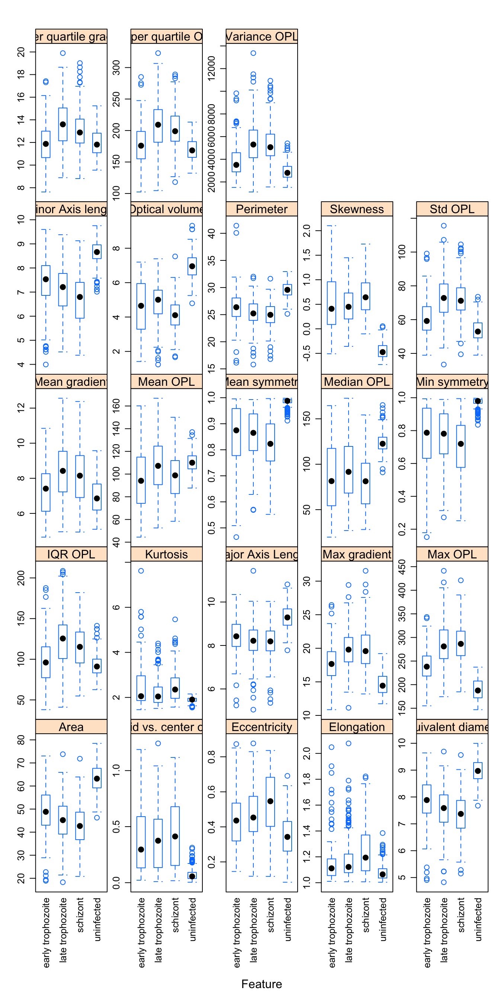 The variables in this data set are on different scales. In this situation it is important to centre and scale each predictor. A predictor variable is centered by subtracting the mean of the predictor from each value. To scale a predictor variable, each value is divided by its standard deviation. After centring and scaling the predictor variable has a mean of 0 and a standard deviation of 1.
G.2.4 Skewness
Observations grouped by infection status:
featurePlot(x = morphologyTrain,
y = infectionStatusTrain,
plot = "density",
## Pass in options to xyplot() to
## make it prettier
scales = list(x = list(relation="free"),
y = list(relation="free")),
adjust = 1.5,
pch = "|",
layout = c(5, 5),
auto.key = list(columns = 2))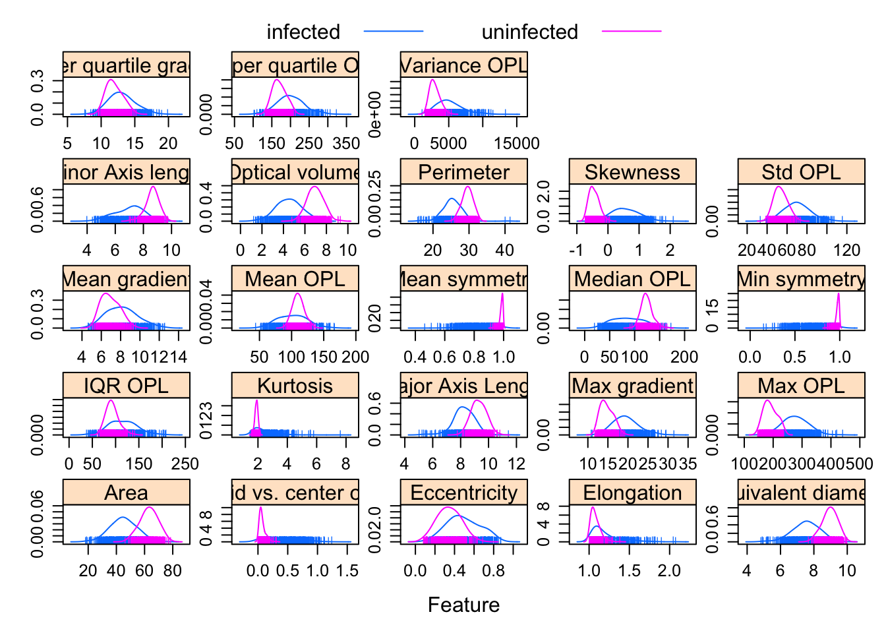
Observations grouped by infection stage:
featurePlot(x = morphologyTrain,
y = stageTrain,
plot = "density",
## Pass in options to xyplot() to
## make it prettier
scales = list(x = list(relation="free"),
y = list(relation="free")),
adjust = 1.5,
pch = "|",
layout = c(5, 5),
auto.key = list(columns = 2))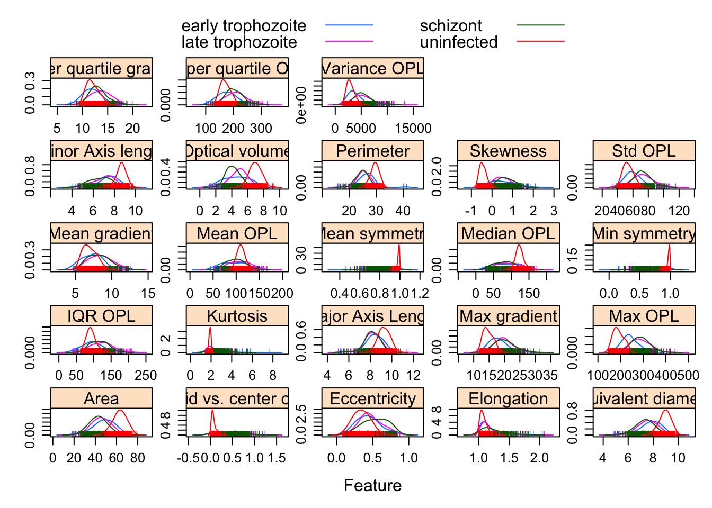
G.3 Infection status (two-class problem)
G.3.1 Model training and parameter tuning
All of the models we are going to use have a single tuning parameter. For each model we will use repeated cross validation to try 10 different values of the tuning parameter.
For each model let’s do five-fold cross-validation a total of five times. To make the analysis reproducible we need to specify the seed for each resampling iteration.
G.3.2 KNN
Train knn model:
knnFit <- train(morphologyTrain, infectionStatusTrain,
method="knn",
preProcess = c("center", "scale"),
#tuneGrid=tuneParam,
tuneLength=10,
trControl=train_ctrl_infect_status)## Warning in train.default(morphologyTrain, infectionStatusTrain, method =
## "knn", : The metric "Accuracy" was not in the result set. ROC will be used
## instead.## k-Nearest Neighbors
##
## 868 samples
## 23 predictor
## 2 classes: 'infected', 'uninfected'
##
## Pre-processing: centered (23), scaled (23)
## Resampling: Cross-Validated (5 fold, repeated 5 times)
## Summary of sample sizes: 695, 694, 695, 694, 694, 695, ...
## Resampling results across tuning parameters:
##
## k ROC Sens Spec
## 5 0.9962939 0.9716012 0.9979310
## 7 0.9963053 0.9688396 0.9986207
## 9 0.9959917 0.9653793 0.9965517
## 11 0.9958366 0.9646897 0.9951724
## 13 0.9958165 0.9646957 0.9965517
## 15 0.9961136 0.9640030 0.9958621
## 17 0.9963648 0.9640060 0.9944828
## 19 0.9961856 0.9619280 0.9958621
## 21 0.9960810 0.9615832 0.9944828
## 23 0.9959707 0.9608966 0.9951724
##
## ROC was used to select the optimal model using the largest value.
## The final value used for the model was k = 17.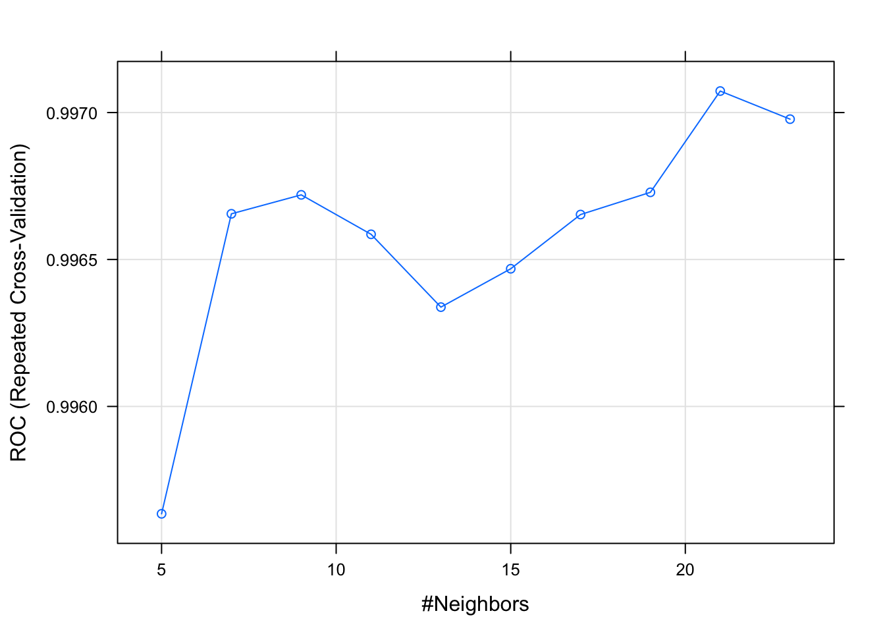
G.3.3 SVM
Train svm model:
svmFit <- train(morphologyTrain, infectionStatusTrain,
method=svmRadialE1071,
preProcess = c("center", "scale"),
#tuneGrid=tuneParam,
tuneLength=10,
trControl=train_ctrl_infect_status)## Warning in train.default(morphologyTrain, infectionStatusTrain, method =
## svmRadialE1071, : The metric "Accuracy" was not in the result set. ROC will be
## used instead.## Support Vector Machines with Radial Kernel - e1071
##
## 868 samples
## 23 predictor
## 2 classes: 'infected', 'uninfected'
##
## Pre-processing: centered (23), scaled (23)
## Resampling: Cross-Validated (5 fold, repeated 5 times)
## Summary of sample sizes: 694, 694, 695, 694, 695, 695, ...
## Resampling results across tuning parameters:
##
## cost ROC Sens Spec
## 0.25 0.9973153 0.9733673 0.9917241
## 0.50 0.9975655 0.9737121 0.9972414
## 1.00 0.9977089 0.9754393 0.9993103
## 2.00 0.9979474 0.9785607 0.9993103
## 4.00 0.9978997 0.9813253 0.9972414
## 8.00 0.9978157 0.9833943 0.9972414
## 16.00 0.9975119 0.9858111 0.9965517
## 32.00 0.9975000 0.9875412 0.9958621
## 64.00 0.9973454 0.9892714 0.9944828
## 128.00 0.9964930 0.9892684 0.9910345
##
## ROC was used to select the optimal model using the largest value.
## The final value used for the model was cost = 2.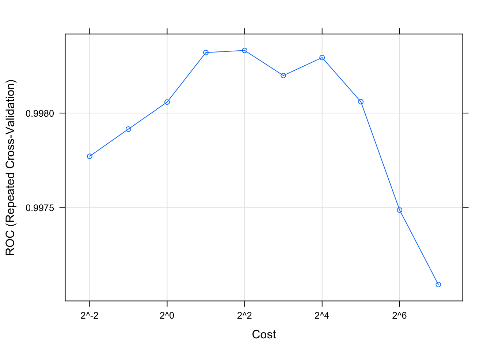
G.3.4 Decision tree
Train decision tree model:
dtFit <- train(morphologyTrain, infectionStatusTrain,
method="rpart",
preProcess = c("center", "scale"),
#tuneGrid=tuneParam,
tuneLength=10,
trControl=train_ctrl_infect_status)## Warning in train.default(morphologyTrain, infectionStatusTrain, method =
## "rpart", : The metric "Accuracy" was not in the result set. ROC will be used
## instead.## CART
##
## 868 samples
## 23 predictor
## 2 classes: 'infected', 'uninfected'
##
## Pre-processing: centered (23), scaled (23)
## Resampling: Cross-Validated (5 fold, repeated 5 times)
## Summary of sample sizes: 694, 694, 694, 695, 695, 694, ...
## Resampling results across tuning parameters:
##
## cp ROC Sens Spec
## 0.0000000 0.9824943 0.9771634 0.9779310
## 0.1003831 0.9652759 0.9574483 0.9731034
## 0.2007663 0.9652759 0.9574483 0.9731034
## 0.3011494 0.9652759 0.9574483 0.9731034
## 0.4015326 0.9652759 0.9574483 0.9731034
## 0.5019157 0.9652759 0.9574483 0.9731034
## 0.6022989 0.9652759 0.9574483 0.9731034
## 0.7026820 0.9652759 0.9574483 0.9731034
## 0.8030651 0.9652759 0.9574483 0.9731034
## 0.9034483 0.7758156 0.9723208 0.5793103
##
## ROC was used to select the optimal model using the largest value.
## The final value used for the model was cp = 0.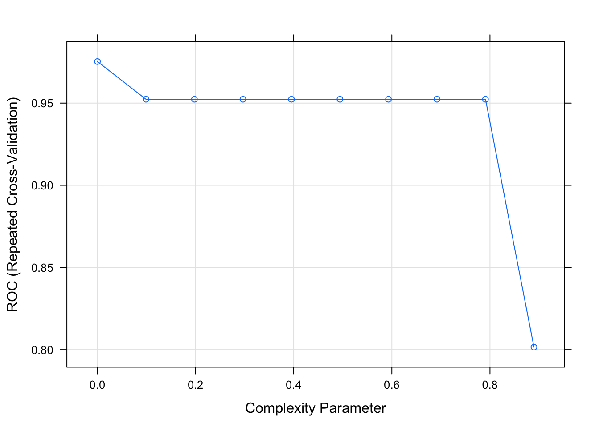
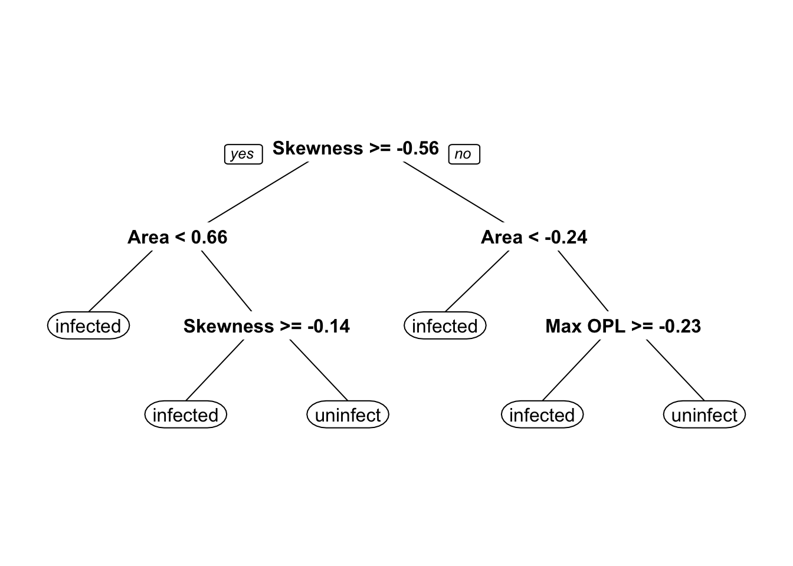
G.3.5 Random forest
rfFit <- train(morphologyTrain, infectionStatusTrain,
method="rf",
preProcess = c("center", "scale"),
#tuneGrid=tuneParam,
tuneLength=10,
trControl=train_ctrl_infect_status)## Warning in train.default(morphologyTrain, infectionStatusTrain, method = "rf", :
## The metric "Accuracy" was not in the result set. ROC will be used instead.## Random Forest
##
## 868 samples
## 23 predictor
## 2 classes: 'infected', 'uninfected'
##
## Pre-processing: centered (23), scaled (23)
## Resampling: Cross-Validated (5 fold, repeated 5 times)
## Summary of sample sizes: 694, 694, 695, 694, 695, 695, ...
## Resampling results across tuning parameters:
##
## mtry ROC Sens Spec
## 2 0.9979473 0.9871994 0.9834483
## 4 0.9976783 0.9871994 0.9827586
## 6 0.9973155 0.9865067 0.9882759
## 9 0.9973173 0.9858141 0.9868966
## 11 0.9967869 0.9851154 0.9862069
## 13 0.9968942 0.9840780 0.9848276
## 16 0.9965961 0.9840750 0.9820690
## 18 0.9964142 0.9830435 0.9793103
## 20 0.9960719 0.9820030 0.9806897
## 23 0.9940873 0.9813133 0.9806897
##
## ROC was used to select the optimal model using the largest value.
## The final value used for the model was mtry = 2.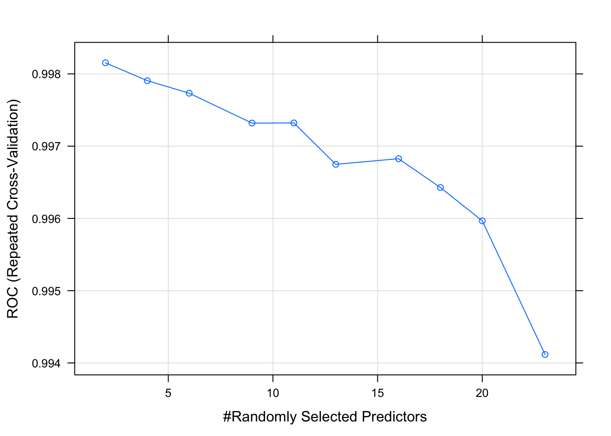
G.3.6 Compare models
Make a list of our models
Collect resampling results for each model
##
## Call:
## resamples.default(x = model_list)
##
## Models: knn, svm, decisionTree, randomForest
## Number of resamples: 25
## Performance metrics: ROC, Sens, Spec
## Time estimates for: everything, final model fit##
## Call:
## summary.resamples(object = resamps)
##
## Models: knn, svm, decisionTree, randomForest
## Number of resamples: 25
##
## ROC
## Min. 1st Qu. Median Mean 3rd Qu. Max. NA's
## knn 0.9865817 0.9940547 0.9979760 0.9963648 0.9991082 0.9999257 0
## svm 0.9937031 0.9965815 0.9994055 0.9979474 0.9997027 1.0000000 0
## decisionTree 0.9656659 0.9743609 0.9818668 0.9824943 0.9906297 0.9999257 0
## randomForest 0.9940780 0.9966558 0.9991082 0.9979473 0.9997001 1.0000000 0
##
## Sens
## Min. 1st Qu. Median Mean 3rd Qu. Max. NA's
## knn 0.9304348 0.9568966 0.9655172 0.9640060 0.9741379 0.9913043 0
## svm 0.9396552 0.9739130 0.9827586 0.9785607 0.9913043 1.0000000 0
## decisionTree 0.9391304 0.9655172 0.9741379 0.9771634 0.9827586 1.0000000 0
## randomForest 0.9565217 0.9827586 0.9913043 0.9871994 0.9913793 1.0000000 0
##
## Spec
## Min. 1st Qu. Median Mean 3rd Qu. Max. NA's
## knn 0.9655172 0.9827586 1.0000000 0.9944828 1 1 0
## svm 0.9827586 1.0000000 1.0000000 0.9993103 1 1 0
## decisionTree 0.9482759 0.9655172 0.9827586 0.9779310 1 1 0
## randomForest 0.9310345 0.9655172 0.9827586 0.9834483 1 1 0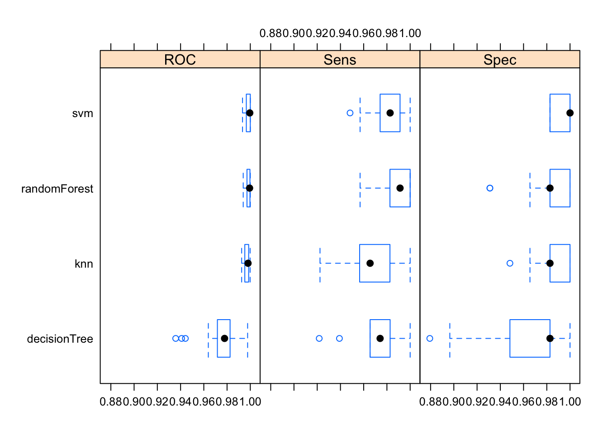
G.3.7 Predict test set using our best model
## Confusion Matrix and Statistics
##
## Reference
## Prediction infected uninfected
## infected 246 2
## uninfected 0 121
##
## Accuracy : 0.9946
## 95% CI : (0.9806, 0.9993)
## No Information Rate : 0.6667
## P-Value [Acc > NIR] : <2e-16
##
## Kappa : 0.9878
##
## Mcnemar's Test P-Value : 0.4795
##
## Sensitivity : 1.0000
## Specificity : 0.9837
## Pos Pred Value : 0.9919
## Neg Pred Value : 1.0000
## Prevalence : 0.6667
## Detection Rate : 0.6667
## Detection Prevalence : 0.6721
## Balanced Accuracy : 0.9919
##
## 'Positive' Class : infected
## G.3.8 ROC curve
## infected uninfected
## normal_..7 0.585266476 0.4147335
## normal_.15 0.009865544 0.9901345
## normal_.23 0.004011000 0.9959890
## normal_.26 0.003558421 0.9964416
## normal_.29 0.049331293 0.9506687
## normal_.31 0.003040713 0.9969593## Setting levels: control = infected, case = uninfected## Setting direction: controls > cases## Area under the curve: 0.9998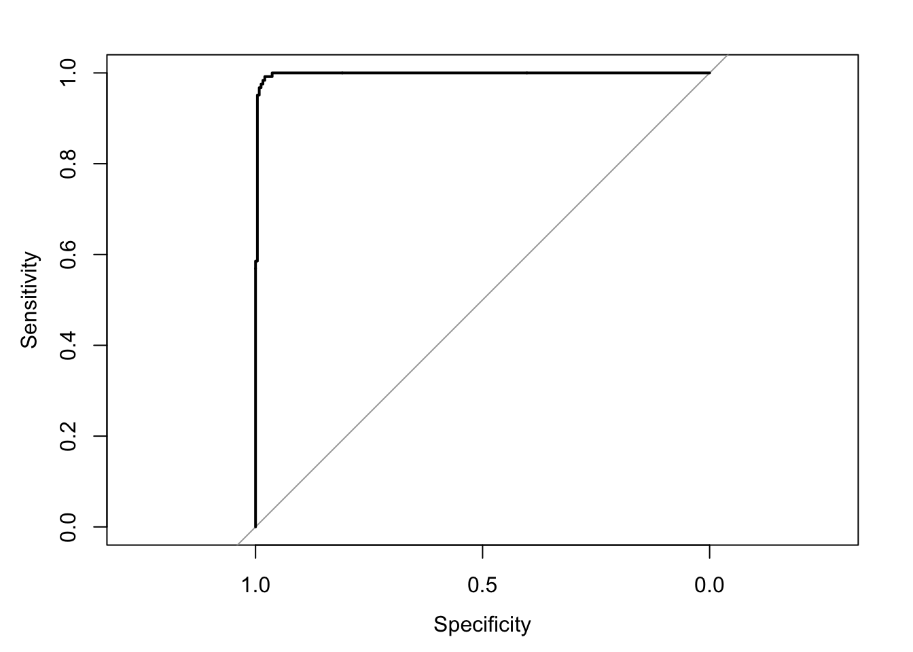
G.4 Discrimination of infective stages (multi-class problem)
G.4.1 Define cross-validation procedure
G.4.2 KNN
Train knn model with all variables:
knnFit <- train(morphologyTrain, stageTrain,
method="knn",
preProcess = c("center", "scale"),
#tuneGrid=tuneParam,
tuneLength=10,
trControl=train_ctrl_stage)
knnFit## k-Nearest Neighbors
##
## 868 samples
## 23 predictor
## 4 classes: 'early trophozoite', 'late trophozoite', 'schizont', 'uninfected'
##
## Pre-processing: centered (23), scaled (23)
## Resampling: Cross-Validated (5 fold, repeated 5 times)
## Summary of sample sizes: 695, 695, 694, 694, 694, 695, ...
## Resampling results across tuning parameters:
##
## k Accuracy Kappa
## 5 0.6868604 0.5665951
## 7 0.7009287 0.5851071
## 9 0.6990776 0.5817008
## 11 0.6990723 0.5810318
## 13 0.6967668 0.5777231
## 15 0.6956239 0.5757095
## 17 0.6939883 0.5731538
## 19 0.6951456 0.5746427
## 21 0.6935272 0.5723110
## 23 0.6863847 0.5621102
##
## Accuracy was used to select the optimal model using the largest value.
## The final value used for the model was k = 7.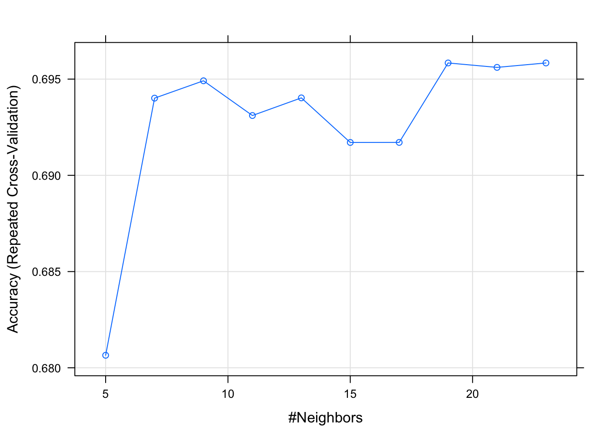
G.4.3 SVM
Train SVM model with all variables:
svmFit <- train(morphologyTrain, stageTrain,
method=svmRadialE1071,
preProcess = c("center", "scale"),
#tuneGrid=tuneParam,
tuneLength=10,
trControl=train_ctrl_stage)
svmFit## Support Vector Machines with Radial Kernel - e1071
##
## 868 samples
## 23 predictor
## 4 classes: 'early trophozoite', 'late trophozoite', 'schizont', 'uninfected'
##
## Pre-processing: centered (23), scaled (23)
## Resampling: Cross-Validated (5 fold, repeated 5 times)
## Summary of sample sizes: 695, 694, 694, 694, 695, 695, ...
## Resampling results across tuning parameters:
##
## cost Accuracy Kappa
## 0.25 0.6965183 0.5770470
## 0.50 0.7131020 0.6018203
## 1.00 0.7213926 0.6141816
## 2.00 0.7220875 0.6157211
## 4.00 0.7292154 0.6260607
## 8.00 0.7333785 0.6326331
## 16.00 0.7241711 0.6206293
## 32.00 0.7094464 0.6008159
## 64.00 0.6972345 0.5847166
## 128.00 0.6903300 0.5758449
##
## Accuracy was used to select the optimal model using the largest value.
## The final value used for the model was cost = 8.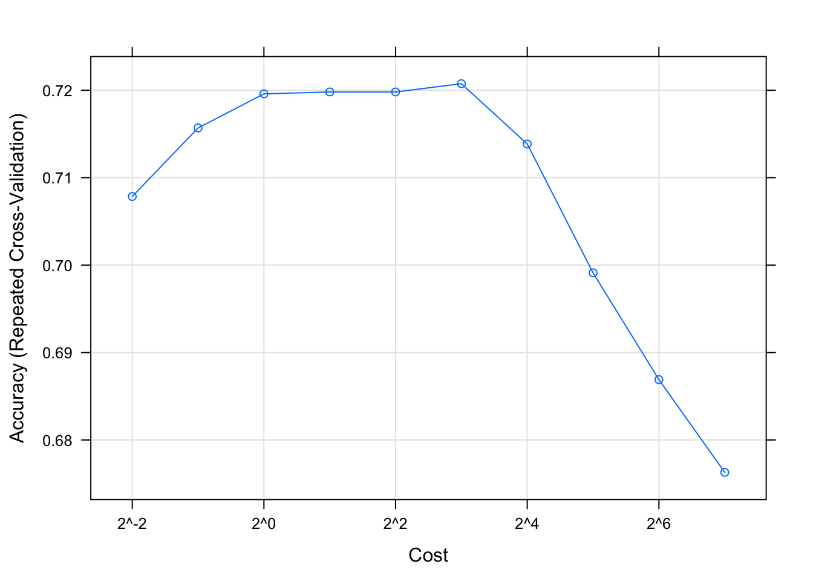
G.4.4 Decision tree
Train decision tree model with all variables:
dtFit <- train(morphologyTrain, stageTrain,
method="rpart",
preProcess = c("center", "scale"),
#tuneGrid=tuneParam,
tuneLength=10,
trControl=train_ctrl_stage)
dtFit## CART
##
## 868 samples
## 23 predictor
## 4 classes: 'early trophozoite', 'late trophozoite', 'schizont', 'uninfected'
##
## Pre-processing: centered (23), scaled (23)
## Resampling: Cross-Validated (5 fold, repeated 5 times)
## Summary of sample sizes: 695, 694, 694, 694, 695, 695, ...
## Resampling results across tuning parameters:
##
## cp Accuracy Kappa
## 0.004498270 0.6882662 0.5716210
## 0.005190311 0.6905585 0.5747141
## 0.006920415 0.6988530 0.5860335
## 0.012110727 0.6960917 0.5831319
## 0.013840830 0.6972398 0.5845125
## 0.015570934 0.6949355 0.5809362
## 0.025951557 0.6898488 0.5724806
## 0.031141869 0.6820128 0.5595580
## 0.119377163 0.6145431 0.4549600
## 0.399653979 0.4920449 0.2576226
##
## Accuracy was used to select the optimal model using the largest value.
## The final value used for the model was cp = 0.006920415.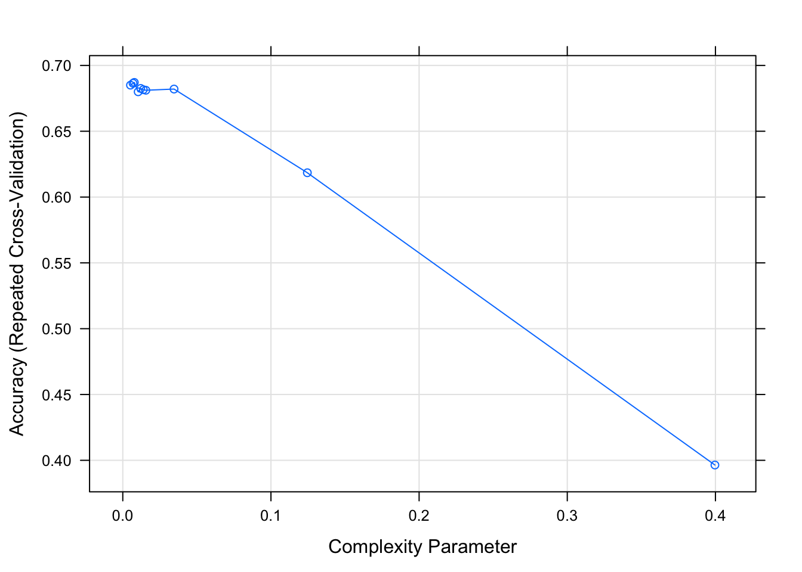
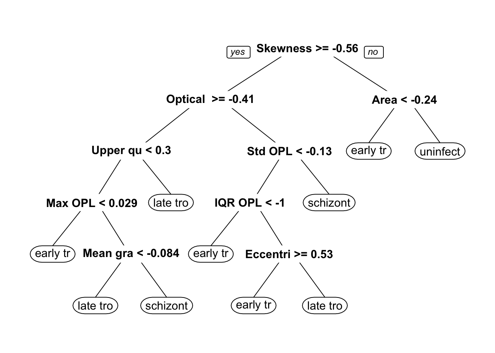
G.4.5 Random forest
Train random forest model with all variables:
rfFit <- train(morphologyTrain, stageTrain,
method="rf",
preProcess = c("center", "scale"),
#tuneGrid=tuneParam,
tuneLength=10,
trControl=train_ctrl_stage)
rfFit## Random Forest
##
## 868 samples
## 23 predictor
## 4 classes: 'early trophozoite', 'late trophozoite', 'schizont', 'uninfected'
##
## Pre-processing: centered (23), scaled (23)
## Resampling: Cross-Validated (5 fold, repeated 5 times)
## Summary of sample sizes: 695, 694, 694, 694, 695, 695, ...
## Resampling results across tuning parameters:
##
## mtry Accuracy Kappa
## 2 0.7228208 0.6176325
## 4 0.7221246 0.6173189
## 6 0.7274200 0.6246213
## 9 0.7219067 0.6171952
## 11 0.7202750 0.6149614
## 13 0.7170539 0.6105192
## 16 0.7209752 0.6161230
## 18 0.7235093 0.6196690
## 20 0.7230323 0.6190254
## 23 0.7232833 0.6195279
##
## Accuracy was used to select the optimal model using the largest value.
## The final value used for the model was mtry = 6.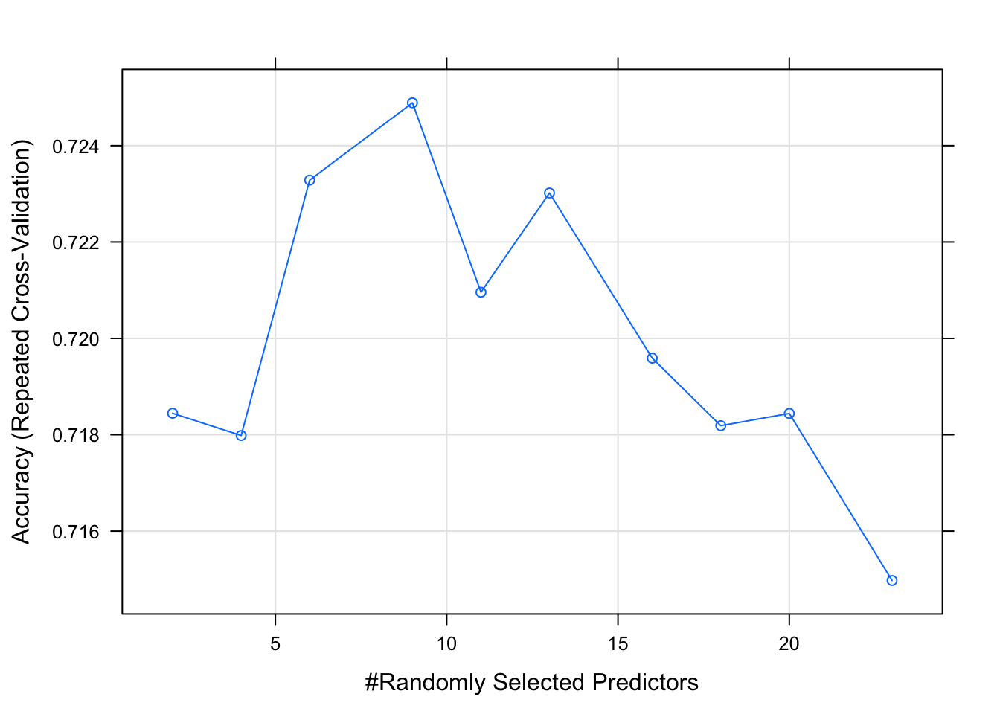
G.4.6 Compare models
Make a list of our models
Collect resampling results for each model
##
## Call:
## resamples.default(x = model_list)
##
## Models: knn, svm, decisionTree, randomForest
## Number of resamples: 25
## Performance metrics: Accuracy, Kappa
## Time estimates for: everything, final model fit##
## Call:
## summary.resamples(object = resamps)
##
## Models: knn, svm, decisionTree, randomForest
## Number of resamples: 25
##
## Accuracy
## Min. 1st Qu. Median Mean 3rd Qu. Max. NA's
## knn 0.6494253 0.6896552 0.6994220 0.7009287 0.7109827 0.7456647 0
## svm 0.6705202 0.7241379 0.7341040 0.7333785 0.7456647 0.7873563 0
## decisionTree 0.6473988 0.6705202 0.7011494 0.6988530 0.7225434 0.7572254 0
## randomForest 0.6763006 0.7011494 0.7298851 0.7274200 0.7514451 0.7919075 0
##
## Kappa
## Min. 1st Qu. Median Mean 3rd Qu. Max. NA's
## knn 0.5123139 0.5676422 0.5827265 0.5851071 0.5998149 0.6473804 0
## svm 0.5440211 0.6195682 0.6331301 0.6326331 0.6489416 0.7081066 0
## decisionTree 0.5120226 0.5490818 0.5853726 0.5860335 0.6163371 0.6688995 0
## randomForest 0.5542058 0.5873584 0.6284754 0.6246213 0.6584168 0.7119734 0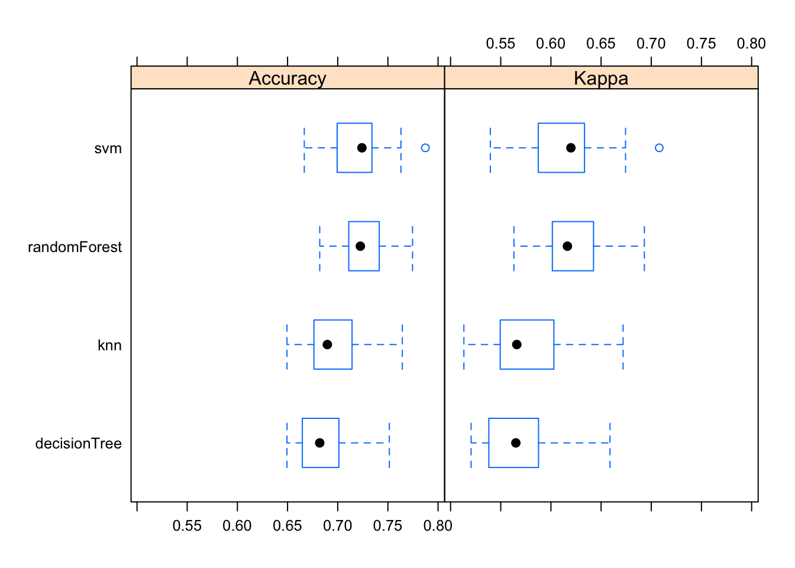
G.4.7 Predict test set using our best model
## Confusion Matrix and Statistics
##
## Reference
## Prediction early trophozoite late trophozoite schizont uninfected
## early trophozoite 27 9 6 3
## late trophozoite 10 54 29 1
## schizont 13 31 66 0
## uninfected 1 0 0 119
##
## Overall Statistics
##
## Accuracy : 0.7209
## 95% CI : (0.6721, 0.7661)
## No Information Rate : 0.3333
## P-Value [Acc > NIR] : < 2.2e-16
##
## Kappa : 0.6167
##
## Mcnemar's Test P-Value : NA
##
## Statistics by Class:
##
## Class: early trophozoite Class: late trophozoite
## Sensitivity 0.52941 0.5745
## Specificity 0.94340 0.8545
## Pos Pred Value 0.60000 0.5745
## Neg Pred Value 0.92593 0.8545
## Prevalence 0.13821 0.2547
## Detection Rate 0.07317 0.1463
## Detection Prevalence 0.12195 0.2547
## Balanced Accuracy 0.73640 0.7145
## Class: schizont Class: uninfected
## Sensitivity 0.6535 0.9675
## Specificity 0.8358 0.9959
## Pos Pred Value 0.6000 0.9917
## Neg Pred Value 0.8649 0.9839
## Prevalence 0.2737 0.3333
## Detection Rate 0.1789 0.3225
## Detection Prevalence 0.2981 0.3252
## Balanced Accuracy 0.7446 0.9817